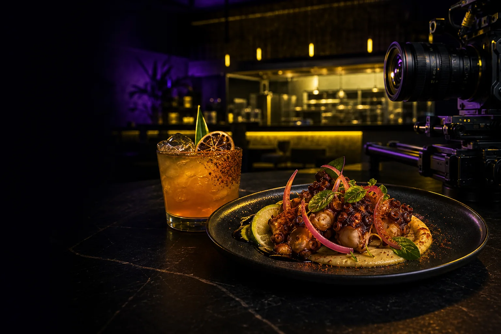

Platillos que se entienden
Fotografía de alimentos, bebidas y detalles para menú digital, delivery, sitio, relaciones públicas y materiales en punto de venta.
RESTAURANTES + HOSPITALITY
Fotografía gastronómica y video para mostrar lo que se come, cómo se vive y por qué vale la pena reservar, visitar o pedir.
Sesiones únicas o producción recurrente · Ciudad de México y proyectos en México.

UNA PRODUCCIÓN, VARIOS MOMENTOS
Organizamos la sesión alrededor de las decisiones reales del negocio: qué platillos deben venderse, qué espacios deben conocerse y qué formatos necesita el calendario comercial.
Fotografía de alimentos, bebidas y detalles para menú digital, delivery, sitio, relaciones públicas y materiales en punto de venta.
Ambiente, equipo, cocina, servicio y recorrido visual para transmitir la personalidad completa del restaurante.
Reels, clips, fotografías y adaptaciones para pauta, redes, temporadas, aperturas y colaboraciones.
Definimos qué debe comunicar cada pieza: apetito, ticket, ambiente, ocasión de consumo o diferenciador de marca.
Menú, bebida, espacios y video principal para una apertura, cambio de carta o nueva temporada.
Producciones programadas para mantener un flujo de contenido coherente sin improvisar cada semana.
PROCESO
Objetivo, platillos, espacios, horarios, canales y calendario comercial.
Shot list, mesa, iluminación, flujo de cocina y ventana de producción.
Selección, color, edición y archivos organizados para publicar.
ANTES DE COTIZAR
La inversión cambia por número de platillos, complejidad de montaje, horario, locación, talento, duración y cantidad de formatos. Proponemos sólo lo necesario para el objetivo.
Sí, aunque normalmente recomendamos una ventana controlada para mantener calidad y reducir interferencias. Lo adaptamos a tu realidad.
Sí. Se pueden calendarizar nuevos platillos, bebidas, temporadas, equipo, ambiente y campañas con una dirección consistente.
Sí, si se planean juntos. Definimos tiempos y shot list para que un formato no comprometa al otro.
Cuando la ubicación, regulación y objetivo lo justifican, se integra para mostrar fachada, entorno, terraza o escala del lugar.
SIGUIENTE PASO
Cuéntanos qué quieres promover, cuántos platillos o espacios necesitan producción y en qué fecha debe estar publicado.
TAMBIÉN PUEDE SERVIRTE